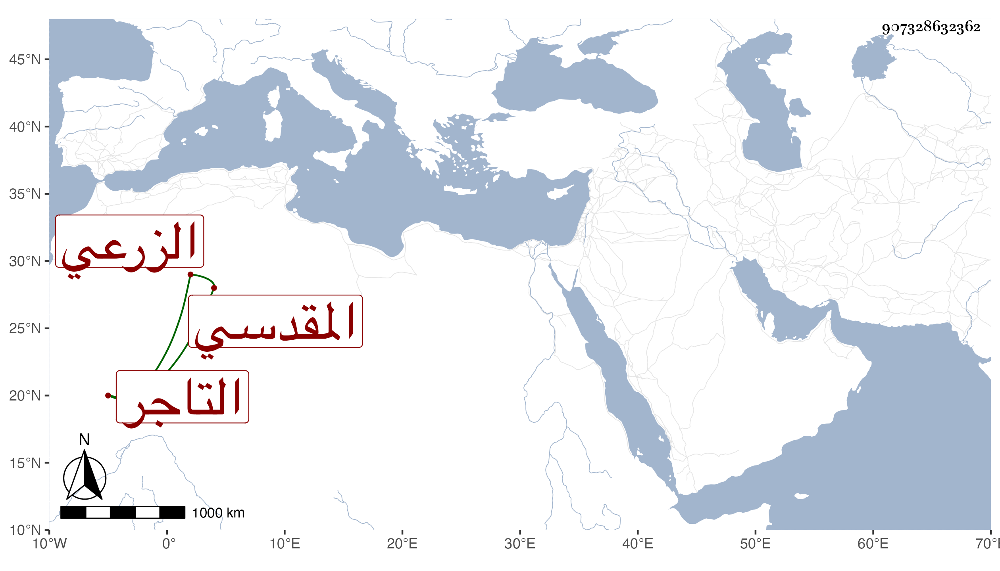

0902Sakhawi.DawLamic.ITO20230111-ara1.EIS1600.907328632362
Biography ID: 907328632362
687
أحمد بن يوسف بن أحمد بن يوسف الشهاب أبو العباس الزرعي الأصل المقدسي التاجر ويعرف بابن سياج بكسر المهملة ثم تحتانية خفيفة وآخره جيم . رجل خير أنس سليم الصدر من أهل القرآن والاعتناء بالتجارة صحب إمام الكاملية واشتغل يسيرا عليه وعلى غيره ، ولازمني حتى قرأ البخاري في سنة ثمانين مع المجلس الذي عملته في ختمه وحصله وحضر عندي عدة مجالس في الإملاء إلى غيرها مما سمعه ونعم الرجل .
